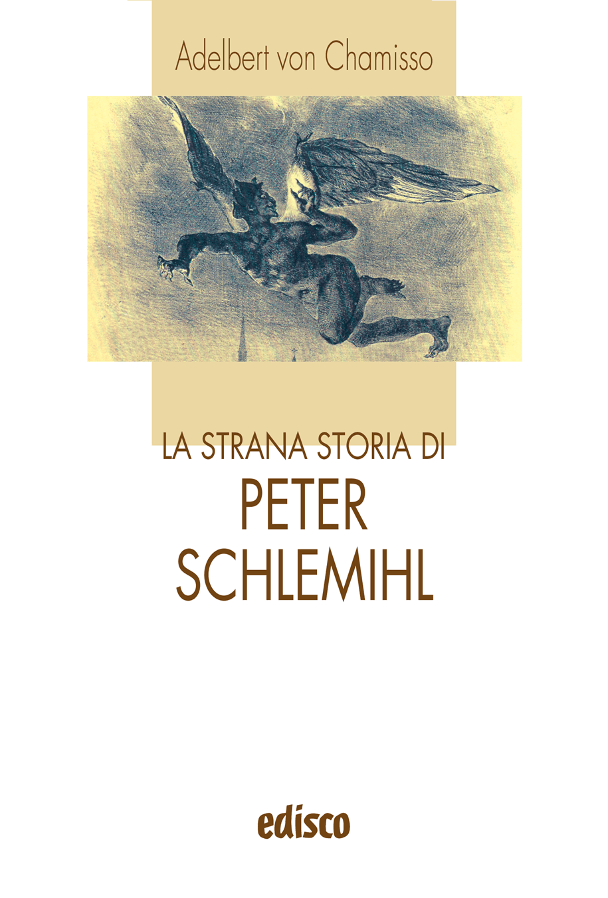

21:45 · 4 OPERE
In ricordo del discorso inaugurale di Aleksandr Solzhenitsyn ad Harvard
Il filo del discorso
Il ricordo del discorso pronunciato da Solženicyn a Harvard nel 1978 apre una critica della società organizzata intorno al controllo e alla produzione materiale. Dr Divago contrappone a questo modello il compito educativo della convivenza e il valore della vita interiore. Discute il rapporto fra cultura popolare, istituzioni e interessi economici, ricorrendo alla figura di Peter Schlemihl e a testi di de Santillana e Anders. Il commento interpreta l’omologazione come rinuncia al giudizio e mette in relazione sviluppo tecnico e responsabilità morale. Il finale presenta il ricordo dei pensatori come una forma di resistenza alla perdita di autonomia spirituale.
I libri nel discorso

A World Split Apart (Discorso di Harvard)
Copertina: Harper & Row · edizione bilingue russo e inglese · 1978
Immagine autentica dell’opera, controllata visivamente; l’edizione di riferimento non è attribuita al filmato.
Solženicyn, Harvard e la data 8 giugno 1978 identificano esplicitamente il discorso commentato.
Passaggio 0:10 ↗ · Fonti e libro ↗
La strana storia di Peter Schlemihl
Identificazione probabile
Copertina: Edisco · I Liocorni · traduzione e cura di Daniela Meinardi
Immagine autentica dell’opera, controllata visivamente; l’edizione di riferimento non è attribuita al filmato.
Il personaggio, Chamisso e la perdita dell’ombra rinviano probabilmente al racconto; titolo completo non annunciato.
Passaggio 11:03 ↗ · Fonti e libro ↗
Fato antico e Fato moderno
Copertina: Adelphi · Piccola Biblioteca 180 · 1985
Immagine autentica dell’opera, controllata visivamente; l’edizione di riferimento non è attribuita al filmato.
Giorgio de Santillana e Fato antico e Fato moderno annunciati prima del passaggio sull’intelligenza.
Passaggio 15:51 ↗ · Fonti e libro ↗
Saggi dall’esilio americano
Copertina: Palomar · Dia-Loghi · 2003
Immagine autentica dell’opera, controllata visivamente; l’edizione di riferimento non è attribuita al filmato.
Günther Anders e Saggi dall’esilio americano nominati dopo la frase sulla produzione dei bisogni.
Passaggio 17:22 ↗ · Fonti e libro ↗